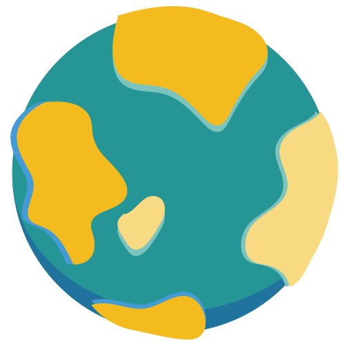
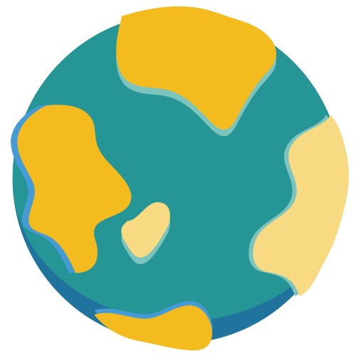

Hello, I am Minchen.
An UXUI & Service Designer!
An UXUI & Service Designer!

Learn more about what I do

Learn more about what I do
I am Minchen Lin, a passionate and experienced UXUI and Service Designer with 4 years of practical experience in this field, who is trained by diverse projects in Taiwan and in Germany. With my Information and Service Design background, I have systematic thinking with business consideration, and like to be a voracious problem solver. Interacting and working with people from different fields has always been exciting for me and meets my personality perfectly.

TOOLS I USE


LANGUAGES I SPEAK


STUFF I LIKE


I put user in my mind, and dig for insights. I do synthesis of business, technology, and aesthetic to ideate every possibility. By testing and iterations I deliver meaningful and valuable solutions.


DISCOVER & DEFINE
Do design research to empathy users, and people in the ecosystem
Then expose real reasons or core issues behind their motivations and actions
DEVELOP & DELIVER
Based on user insights, do ideation. Also consider business viability and technical feasibility. Then use prototype for testing and communication to shape ideas
Define and design strategy and business models are important too, which make ideas "from Sketchbook to Spreadsheet"

 

Taiwan | 2018
Taiwan | 2017
Taiwan | 2016
Taiwan | 2016
Germany | 2014
Taiwan | 2012
Since attackers have become more sophisticated, enterprises must turn to more advanced detection and response capabilities. However, an ordinary in-house IT team has no related expertise and most of small/midsize enterprise only implement limited in security tools/staffs. To close this gap, Trend Micro offers Managed Detection and Response (MDR) services, which provide 24/7 monitoring, alerts correlation/prioritization, threat hunting/investigation, and remediation plans.
Unlike other projects, this offering is not a product but a service provided by global Trend Micro operation team. In the early stage, we host an internal Value Proposition workshop to sync up our core values with all stakeholders. And our output would be research materials for external validation that keep us on the right course.

Besides services part, there is a main product console: Trend Micro Threat Investigation Center which is designed for Trend Micro operation team. I conducted job shadowing researches and interviews with them in the U.S. to collect pain points, feedback and requirements.
Trend Micro Threat Investigation Center combines log aggregation, heuristic analysis and includes essential/useful investigation tasks (e.g., sweeping, sample collection). So the design will be focused on the presentation of analytic results and a fluent investigation flow.


This product is based on agile software development methodology with a monthly release cycle. As the main designer, I need to work closely with product and project managers to plot a clear yearly roadmap. Then I could plan long-term and short-term research topics with researchers. The capability of time management is a must-have item. I should not only deliver wireframe on time but pay attention to development progress. To fit in the schedule, sometimes I need to compromise on the ideal solutions, but I would add all UX gaps in the product backlogs and keep tracking them.

In May 2018, Managed Detection and Response services was globally launched. Since July, Trend Micro global MDR operation team have provided services to more than ten enterprise customers and the number is still increasing. Although the operation team are spread across different countries (US, Philippines, Ireland…), product team and I collect requirements/comments and validate design frequently by weekly sync-up meetings. We also inserted some tracking code on the console for getting feedback of user behaviors. Based on those resources, I could keep refining my design and ensure we deliver an useful and meaningful technology.

✦ If you like to have further information about this project, please do not hesitate to contact me. ✦
In order to help organizations reduce Detection, Investigation and Remediation gaps, Trend Micro provides Endpoint Sensor which gives users complete visibility into the attack vector, spread, and extent of a targeted attack impact.
Before going deep into the design, researchers and I defined target audiences based on company strategies, market trends, and customer researches. Also, we collected real use cases from Gartner reports and internal/external interviews. Then we did concept validation with customers by using wireframes I designed to make sure we are on the right track.

The core value of Endpoint Detection and Response (EDR) solution is to display the root cause of threat and provide a fluent flow to accelerate investigation and response. After I've become the new main designer of this product, my mission is to clearly deliver that value and enhance the usage experience. Unlike the previous versions, which only focused on Hunter (type A users), in this new release we would like to expand our targets of business to type B users as well. Therefore, different from former presentations (the left-hand side of below image), I present a simplified chain in the first layer, which can make these two types of users easily understand the attack story.

Also, I've moved a bunch of data (e.g, process ID, file path/hash value, etc.) to the second or third layer with corresponding actions (e.g, endpoint isolation, object termination). This provides enough details and guidance for type A users and also some type B users who want to learn how to do threat investigation.

In 2018 Q4, this product will be official released. Before code freeze, developers will insert some codes for user behavior tracking to record their configurations and usage statistics. Those data would definitely be a good resource for me to keep improving the design and usage flow.
✦ If you like to have further information about this project, please do not hesitate to contact me. ✦
In order to provide a reliable and positive work environment, we designed this system to deploy ultimate surveillance coverage, helping security guards and managers to monitor and protect property of the company.
Before design this system, we did field study and qualitative research with security guards in company to empathize their needs and pain points. Then we invited stakeholders to join the small workshop to do ideation using value proposition canvas.

Those information and resources became nutrients of our design. After several rounds of discussions with each stakeholder and we also gave serious consideration about the costs, time and technical feasibility. This surveillance platform is separated into three parts: Central Control System (PC view & mobile view), Vendor System, and Permission Setting. We put a lot of effort into wireframes design to fulfill every scenario. The logic of flow, the style of interface...each part of our design was done by iterations.

In January 2016, this Building Surveillance system was in-house launched. And of course we still collect feedback from users and make adjustments.
✦ If you like to have further information about this project, please do not hesitate to contact me. ✦
Our service vision is not just about detecting pet diseases but providing the comprehensive long-term pet health care and facilitating disease prevention awareness of the pet owners.
We cooperated with deep dive market team to analyze market data, and based on this quantitative result we decided our target audience for qualitative research. In order to realize actual situations and a work process, we visited dozens of animal hospitals from different locations in Taiwan. By interviews, questionnaires and other research methods, we received a lot of valuable and unexpected information.

We sorted out that information by affinity diagram and try to unravel real needs and core issues of their daily workflow. Our key finding could be separated into four parts: disease detection, medical treatment, information flow, and hospital environment.

Based on these four key findings, we did several rounds of brainstorming. Then we discussed about the input and output of each idea to connect them and generate the comprehensive service. We made the service blueprint to record this completed and thoughtful service. This blueprint is not only showing us the whole picture of our service, but also is really helpful when we use it to communicate with other technical teams.

After we discussed with stakeholders and considered about the costs, time and technical feasibility, we narrowed down the scope of the service and started to design related user interfaces.


✦ If you like to have further information about this project, please do not hesitate to contact me. ✦
- Innovative Services for Hospital Hygiene -
-- This project was done on German hospitals, led by Prof. Birgit Mager - President of Service
Design Network --
Hospital infections and resistant germs are becoming a serious problem in whole Europe. To
fight against it has become a very important issue for the German government. We developed the
solution, MediClean, which offers a series of innovative services for improving hospital
hygiene.
In order to get the big picture of the working scenario in the hospital, at first we spoke to one of the representatives of this industry to understand the role of each part in the medical system. As we expected, a cleaning staff is the important stakeholder. Then we did field research in hospitals of Berlin, Frankfurt and Daun. Based on our research, the core issues of hospital hygiene include: 1. Time pressure and work-flow of cleaning staffs 2. Content of training program (qualification and knowledge) 3. Sense of belonging in team and language boundaries of cleaning staffs


Before a brainstorming, we also surveyed existing solutions on the market to make us know technical feasibility. And after several rounds of ideation, we proposed services as below:
▪ Digital Platform
The system filters data that allows users to receive only meaningful information. Another feature is changing the display language, according to users' preferences. That could allow them to overcome possible language issues and barriers in the company due to cultural diversity.

▪ Welcome Kit
The welcome kit is a personal set that the new cleaner receives on the first day of training with many useful tools. With this welcome kit, we believe the cleaner should feel more integrated in the team and feel more proud of their job.

▪ Business Welcome Card & Professional Uniform
In order to raise self-confidence of cleaning staffs, we redesign uniforms and accessories to make cleaners become confident to talk with others about their work and strengthen their role in the hospital.
▪ Relaxing Space for Cleaners
To enhance cleaner’s sense of belonging we design the private space for them, where they can study, take a break and chat with each other.
✦ If you like to have further information about this project, please do not hesitate to contact me. ✦
“Design thinking is a human-centered approach to innovation that draws from the designer's toolkit to integrate the needs of people, the possibilities of technology, and the requirements for business success.” —Tim Brown, president and CEO
In 2011, five coaches from d.school (institute of design at Stanford) hosted a two-day workshop in National Tsing Hua University to deliver the concept of Design Thinking. By these five processes: Empathy, Define, Ideate, Prototype and Test, we learn Design thinking has come to be defined as combining empathy for the context of a problem, creativity in the generation of insights and solutions, and rationality in analyzing and fitting various solutions to the problem context.

▪ 2012 Hosted two days Design Thinking workshop to university students
▪ 2013 Hosted a Design Thinking workshop for NeuroSky (http://neurosky.com/) with 30
participants based on Biosensor Technology to develop new applications
✦ If you like to have further information about this project, please do not hesitate to contact me. ✦

If you want to collaborate on something awesome and meaningful or just say hello, feel free to sent me
a message (minchen.lin.1216@gmail.com).
Hope to hear from you soon!